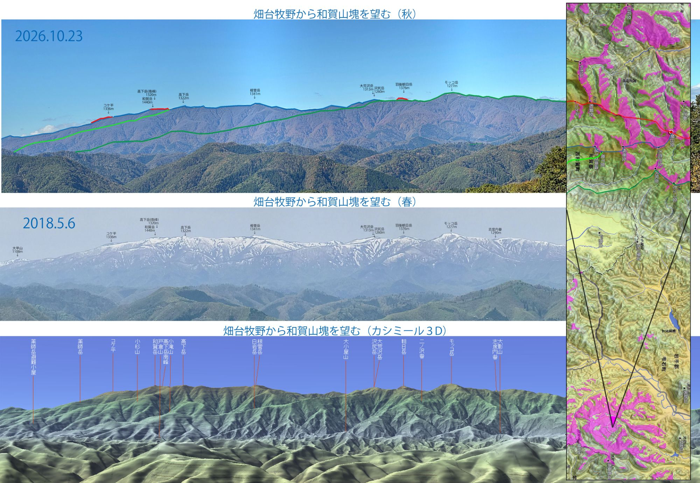
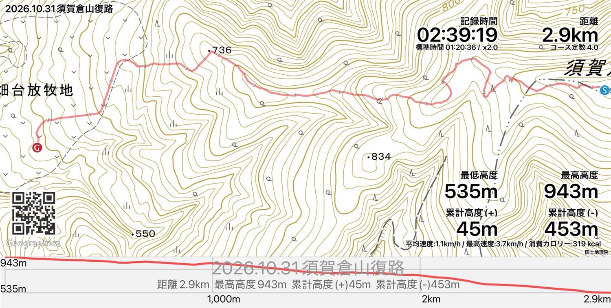
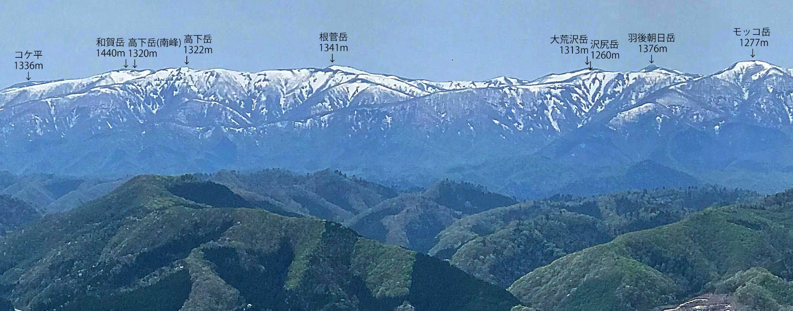

開催概要
| 日時 | 10月31日(土) 9:00〜16:00（開催済み） |
|---|---|
| 場所 | 紫波町 須賀倉山（畑台牧野から） |
| 内容 | 紫波町の最高峰で、登山道のない須賀倉山を目指しました。 |
| 対象 | 岩手県内在住の方 |
| 定員 | 15人（抽選） |
| 費用 | 1,000円 |
| 問い合わせ | 都南つどいの森 019-637-0877 |
※ このワークショップは終了しています。ご参加のみなさま、お疲れさまでした。
当日の資料：畑台牧野から和賀山塊を望む
登り口の畑台牧野からは、和賀山塊の主稜線が連なって見えます。当日の資料として使った眺望図です。上から、秋（2026年10月23日）、春（2018年5月6日）、地図ソフト「カシミール3D」で再現した同じ方向の眺めを並べています。右の地図のピンクは、羽後朝日岳の山頂から見える範囲です。

当日の写真集（2026年10月31日）
当日の写真を、歩いた順におおよそ並べています。写真をクリックすると大きく表示されます。左上の丸をクリックして選んだ写真は、まとめてダウンロードできます。
※ 複数枚をまとめてダウンロードするとき、ブラウザが「複数のファイルのダウンロードを許可しますか」と確認することがあります。許可すると選んだ枚数ぶん保存されます。
下山のGPSログ

地図：国土地理院
復路の距離2.9km
記録時間2時間39分
標高535–943m
累計標高差（下り）453m
春の和賀山塊
トップページに掲載していた、畑台牧野から眺めた残雪の和賀山塊です。山名と標高を書き込んでいます。左からコケ平（1336m）、和賀岳（1440m）、高下岳（1322m）、根菅岳（1341m）、大荒沢岳（1313m）、沢尻岳（1260m）、羽後朝日岳（1376m）、モッコ岳（1277m）。

須賀倉山のふもとの河川争奪
須賀倉山のふもと、畑台放牧地のあたりでは、ふたつの沢が危ういほど近づいています。コラム「川が、川を奪う」で、その現場を図とアニメーションで紹介しています。